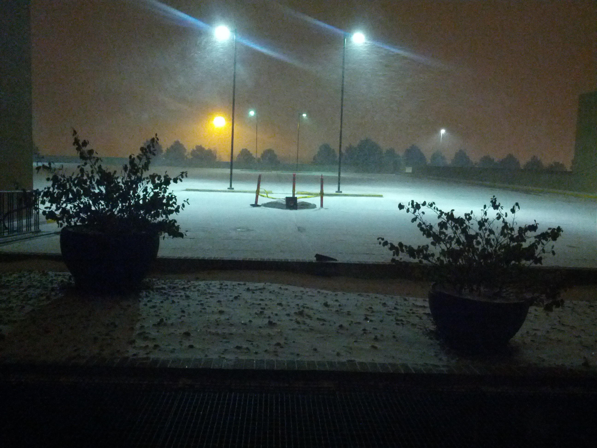

Chapter 2
Dec. 19, 2012
This holiday season our local hero’s saga continues...
Our trusty Mr. Plow’s troubles began before the first flake even dropped from the sky. Preparation for this “Storm of the Week” was made even more difficult as local experts could only confirm that some amount of snow would fall - and it would start falling at some point in the morning. Armed with such detailed information what was our hero to do? He couldn’t very well sit guard all night waiting for that first crystal to drop - or could he ...
 As it turns out - no - no he couldn’t. As the day’s eager young workers began rolling in arround 4:30 the Guardian of the Lot was nowhere to be seen. An oversight perhaps overlookable as that sweet cold powder had yet to blanket our little world. But as the morning wore on, the ever diligent Mr. Plow had yet to take his post. In fact even as the first flakes graced our lot and began to privide that ever so slight veneer - still no sign of our saviour.
And thus ends this chapter of The Chronicles of Mr. Plow